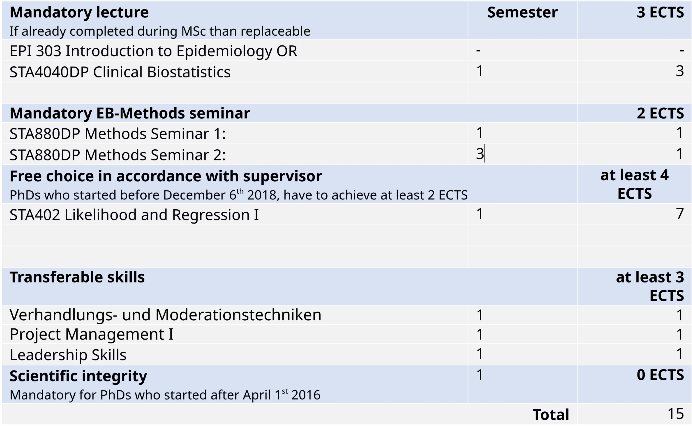
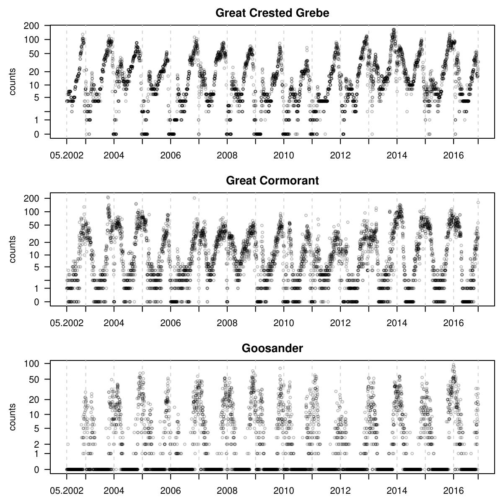
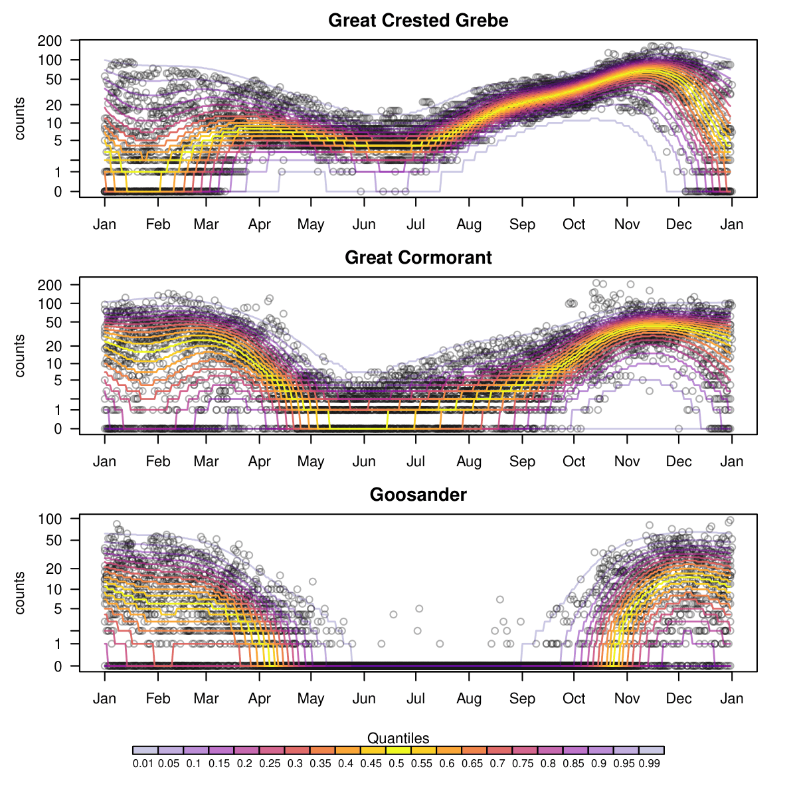
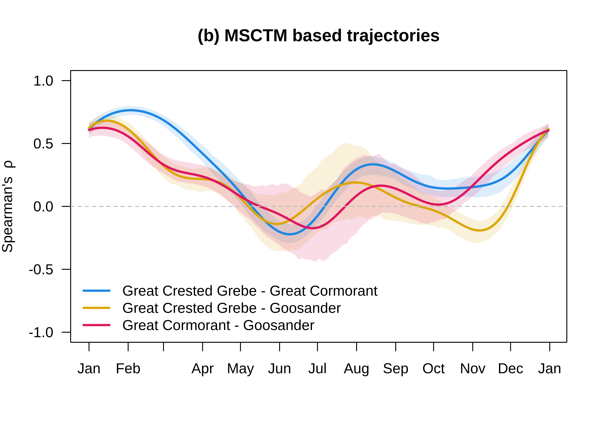
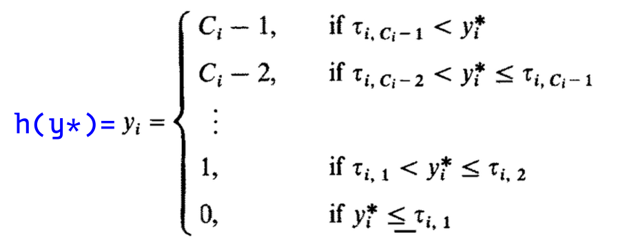
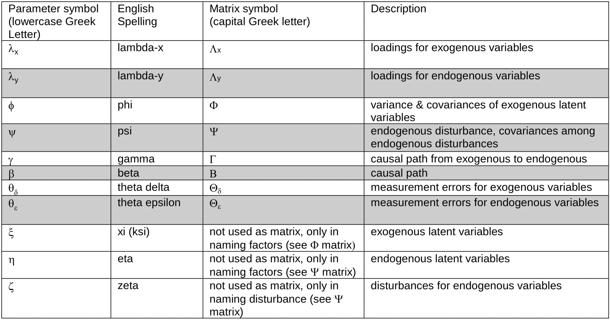

Multivariate Transformation Models
This presentation: https://lgraz.com/2026-05-06–commitee-Meeting/
University of Zurich
6. May 2026
Planned Teaching (100-420h)
Planned Course Work (min 12 ECTS)
MANDATORY:
FREE CHOICE: (min 4 ECTS)
TRANSFERABLE SKILLS: (min 3 ECTS)

Defense
Anticipated around April 2028
Planned one remaining committee meeting in 2027 😃
Statistics
- Motivating Example: Birds
- Theoretical Framework
- Counts
- Structural Equation Models (SEM)
Statisticians’ Wishlist
- Distribution-free regression models
- Multivariate via Gaussian copula \(\boldsymbol{\Sigma}\)
- Counts
- Regression parameters \(A_{ij}\) from \(\boldsymbol{\Sigma}\)
- Covariate-dependent Gaussian copula: \(\boldsymbol{\Sigma}(\mathbf{x})\)
- \(A(\mathbf{x})_{ij}\) from \(\boldsymbol{\Sigma}(\mathbf{x})\)
Count Time Series

\(F_{Y_j \mid \mathbf{x}}(y_j) = \Phi_{0,1}(h_j(y_j\mid \mathbf{x})),\quad\) for \(j=1,2,3\)

\(\boldsymbol{\Sigma}(\mathbf{x})_{ij},\quad\) for each pair \((i,j)\)

Theoretical Framework
Univariate model:
\[F_{Y_j}(y_j) = \Phi_{0,1} (h_j(y_j)),\]
where \(h_j\) is a monotonic transformation function.
- Step function
- Smooth function (via Bernstein spline basis)
Multivariate model:
\[F_{\mathbf{Y}}(\mathbf{y}) = {\Phi}_{\mathbf{0},\boldsymbol{\Sigma}}(\mathbf{h}(\mathbf{y}))\]
- \(\mathbf{Y}= (Y_1,\dots,Y_J)^\top\)
- \(\mathbf{h}(\mathbf{Y}) = (h_1(Y_1), \dots, h_J(Y_J))^\top\)
Covariance Structure
\(\operatorname{diag}(\boldsymbol{\Sigma}) \overset{!}{=} \mathbf{1}\)
\(\boldsymbol{\Sigma}:= \boldsymbol{\Omega}^{-1} \boldsymbol{\Omega}^{-\top}\)
\(\boldsymbol{\Omega}:= \boldsymbol{\Lambda}\operatorname{diag}(\boldsymbol{\Lambda}^{-1}\boldsymbol{\Lambda}^{-\top})^{\frac{1}{2}}\)
\(\boldsymbol{\Lambda}:= \begin{pmatrix} 1 & & & 0 \\ \lambda_{21} & 1 & & \\ \vdots & \ddots & \ddots & \\ \lambda_{J1} & \dots & \lambda_{J,J-1} & 1 \end{pmatrix}\)
Regressions
- \(\mathbf{h}(\mathbf{Y}) \sim \operatorname{N}(\mathbf{0}, \boldsymbol{\Sigma}) = \operatorname{N}(\mathbf{0}, \boldsymbol{\Omega}^{-1} \boldsymbol{\Omega}^{-\top})\)
- \(\boldsymbol{\Omega}\,\mathbf{h}(\mathbf{Y}) \sim \operatorname{N}(\mathbf{0}, \mathbf{I})\)
The \(i\)-th entry of \(\boldsymbol{\Omega}\, \mathbf{h}(\mathbf{Y})\):
\[ % F(h_j(Y_j)\mid \mY_{<j}) % = \sum_{i=1}^{j}\Omega_{ji}h_i(Y_i) \sim \operatorname{N}(0, 1) \]
\[ h_j(Y_j) - \sum_{i=1}^{j-1}\underbrace{-\frac{\Omega_{ji}}{\Omega_{jj}}}_{A_{ij}:=}h_i(Y_i) \sim \operatorname{N}(0, \Omega_{jj}^{-2}) \]
\[ h_j(Y_j) = A_{1j} h_1(Y_1) + \dots + A_{j-1,j} h_{j-1}(Y_{j-1}) + \varepsilon_j, \quad \varepsilon_j \sim \operatorname{N}(0, \Omega_{jj}^{-2}) \]
Covariates \(\mathbf{x}\)
- \(F_{\mathbf{Y}\mid \mathbf{x}}(\mathbf{y}) = {\Phi}_{\mathbf{0},\boldsymbol{\Sigma}(\mathbf{x})}(\mathbf{h}(\mathbf{y}\mid \mathbf{x}))\)
- \(\mathbf{h}(\mathbf{Y}\mid \mathbf{x}) = (h_1(Y_1 \mid \mathbf{x}), \dots, h_J(Y_J \mid \mathbf{x}))^\top\)
- Linear shift: \(\mathbf{h}(\mathbf{Y}\mid \mathbf{x}) = \mathbf{h}(\mathbf{Y}) - (\boldsymbol{\beta}_1, \dots, \boldsymbol{\beta}_J)^\top\mathbf{x}\)
- Marginally: \(h_j(y_j \mid \mathbf{x}) = h_j(y_j) - {\boldsymbol{\beta}_j}^\top\mathbf{x}\)
- Add scaling: \(h_j(y_j \mid \mathbf{x}) = \mathrm{e}^{\boldsymbol{\gamma}_j(\mathbf{x})} h_j(y_j) - {\boldsymbol{\beta}_j}^\top\mathbf{x}\)
- Linear shift: \(\mathbf{h}(\mathbf{Y}\mid \mathbf{x}) = \mathbf{h}(\mathbf{Y}) - (\boldsymbol{\beta}_1, \dots, \boldsymbol{\beta}_J)^\top\mathbf{x}\)
Counts
- Define \(\mathbf{C}= (C_1, \dots, C_J) := (\lceil Y_1 \rceil, \dots, \lceil Y_J \rceil) = \lceil \mathbf{Y}\rceil\)
- \(F_{\mathbf{C}}(\mathbf{c}) = F_{\mathbf{Y}}(\mathbf{c})\quad\) for \(\mathbf{c}\in {\mathbb{N}_0}^J\)
- \(F_{\mathbf{C}}(\mathbf{y}) = F_{\mathbf{Y}}(\lfloor \mathbf{y}\rfloor)\quad\) for \(\mathbf{y}\in \mathbb{R}^J\)
Then for \(\mathbf{c}\in {\mathbb{N}_0}^J\):
\[ \begin{aligned} \mathbb{P}(\mathbf{C}= \mathbf{c}) % &= F_{\mC}(\cvec) + (-1)^1 \sum_{j=1}^J F_{\mC}(\cvec - \evec_j) + \dots + (-1)^J F_{\mC}(\cvec - \sum_{j=1}^J \evec_j)\\ % &= F_{\mY}(\cvec) + (-1)^1 \sum_{j=1}^J F_{\mY}(\cvec - \evec_j) + \dots + (-1)^J F_{\mY}(\cvec - \sum_{j=1}^J \evec_j)\\ % &= \Prob\!\left(\mY \in \prod_{j=1}^J (c_j - 1, c_j]\right) &= \mathbb{P}\!\left(\mathbf{Y}\in (\mathbf{c}- \mathbf{1}, \mathbf{c}]\right)\\ &= \int_{\mathbf{c}- \mathbf{1}}^{\mathbf{c}} f_{\mathbf{Y}\mid \mathbf{x}}(\mathbf{y}) \mathrm{d}\mathbf{y}= \int_{\mathbf{h}(\mathbf{c}- \mathbf{1}\mid \mathbf{x})}^{\mathbf{h}(\mathbf{c}\mid \mathbf{x})} \boldsymbol{\phi}_{\boldsymbol{\Sigma}(\mathbf{x})}(\mathbf{z}) \mathrm{d}\mathbf{z} \end{aligned} \]
Publication 1: Multi-Species Counts Transformation Models
Structural Equation Models (SEM)
- Latent variables \(\rightarrow\) indicators
- Regression between latent variables
- Path analysis (e.g., mediation)
- Explain \(\boldsymbol{\Sigma}_{\mathrm{total}}\) using \(\boldsymbol{\Sigma}_{\mathrm{model}}\)
Ordinal Variables (Muthén 1984)
Modeled via Gaussian latent variables and threshold transformations:

LISREL Framework

Shaded symbols: simplified four-matrix notation. https://web.pdx.edu/~newsomj/semclass/ho_lisrel%20notation.pdf
Reticular Action Model (RAM)
\[ \boldsymbol{\Sigma}= (\mathbf{I}- \mathbf{A})^{-1} \mathbf{S}(\mathbf{I}- \mathbf{A})^{-\top} \]
- \(\mathbf{A}\): Directed effects / regression coefficients
- \(\mathbf{S}\): Covariances of error terms
Limitations:
- Unidentifiability issues
- Lacks flexible transformations
Multivariate Transformation Models (MTMs)
Assuming a causal ordering: \[\mathbf{Y}= (\mathbf{Y}_{\text{latent}}, \mathbf{Y}_{\text{observed}})^\top\]
Expressed in RAM notation:
- \(\mathbf{A}= \mathbf{I}-\operatorname{diag}(\boldsymbol{\Omega})^{-1}\boldsymbol{\Omega}\)
- \(\mathbf{S}= \operatorname{diag}(\boldsymbol{\Omega})^{-2}\)
\[ \boldsymbol{\Sigma}= (\mathbf{I}- \mathbf{A})^{-1}\mathbf{S}(\mathbf{I}- \mathbf{A})^{-\top} % = (\diag(\mOmega)^{-1}\mOmega)^{-1}\diag(\mOmega)^{-2}(\diag(\mOmega)^{-1}\mOmega)^{-\top} = \boldsymbol{\Omega}^{-1} \boldsymbol{\Omega}^{-\top} \]
Publication 2: SEMs via MTMs
Key Advantages:
- Simple, identifiable parameterization
- Flexible marginal transformations
- Joint estimation of transformations and regression parameters
Current Progress & Tasks
-
- Ordinal
- Continuous (via Bernstein basis polynomials)
-
- Evaluate standard errors
- Assess the effect of joint estimation on transformations
Future Work
- Goal: Covariate-dependent effects & Moderation.
- Idea: Model \(\mathbf{A}(\mathbf{x})\) via \(\boldsymbol{\Lambda}(\mathbf{x})\).
- Challenge: How can we make only specific elements of \(\mathbf{A}\) covariate-dependent?
- Challenges arise with parameter constraints and estimation
- Exploration: Adjusted transformation functions \(\mathbf{h}(\mathbf{y}\mid \mathbf{x})\).
\(\Longrightarrow\) Publication 3: Covariate-Dependent SEMs via MTMs
Publication Plan & Timeline
- Multi-Species Counts Transformation Models
Journal: Ecology
Co-authors: Luisa Barbanti, Roland Brandl, Torsten Hothorn - SEMs via MTMs
- Covariate-Dependent SEMs via MTMs
References